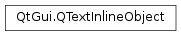

QTextInlineObject¶
Synopsis¶
Functions¶
- def
ascent() - def
descent() - def
format() - def
formatIndex() - def
height() - def
isValid() - def
rect() - def
setAscent(a) - def
setDescent(d) - def
setWidth(w) - def
textDirection() - def
textPosition() - def
width()
Detailed Description¶
The
PySide2.QtGui.QTextInlineObjectclass represents an inline object in aPySide2.QtGui.QAbstractTextDocumentLayoutand its implementations.Normally, you do not need to create a
PySide2.QtGui.QTextInlineObject. It is used byPySide2.QtGui.QAbstractTextDocumentLayoutto handle inline objects when implementing a custom layout.The inline object has various attributes that can be set, for example using,
PySide2.QtGui.QTextInlineObject.setWidth(),PySide2.QtGui.QTextInlineObject.setAscent(), andPySide2.QtGui.QTextInlineObject.setDescent(). The rectangle it occupies is given byPySide2.QtGui.QTextInlineObject.rect(), and its direction byPySide2.QtGui.QTextInlineObject.textDirection(). Its position in the text layout is given byPySide2.QtGui.QTextInlineObject.textPosition(), and its format is given byPySide2.QtGui.QTextInlineObject.format().
-
class
PySide2.QtGui.QTextInlineObject¶
-
PySide2.QtGui.QTextInlineObject.ascent()¶ Return type: PySide2.QtCore.qrealReturns the inline object’s ascent.
-
PySide2.QtGui.QTextInlineObject.descent()¶ Return type: PySide2.QtCore.qrealReturns the inline object’s descent.
-
PySide2.QtGui.QTextInlineObject.format()¶ Return type: PySide2.QtGui.QTextFormatReturns format of the inline object within the text layout.
-
PySide2.QtGui.QTextInlineObject.formatIndex()¶ Return type: PySide2.QtCore.intReturns an integer describing the format of the inline object within the text layout.
-
PySide2.QtGui.QTextInlineObject.height()¶ Return type: PySide2.QtCore.qrealReturns the inline object’s total height. This is equal to
PySide2.QtGui.QTextInlineObject.ascent()+PySide2.QtGui.QTextInlineObject.descent()+ 1.
-
PySide2.QtGui.QTextInlineObject.isValid()¶ Return type: PySide2.QtCore.boolReturns
trueif this inline object is valid; otherwise returns false.
-
PySide2.QtGui.QTextInlineObject.rect()¶ Return type: PySide2.QtCore.QRectFReturns the inline object’s rectangle.
-
PySide2.QtGui.QTextInlineObject.setAscent(a)¶ Parameters: a – PySide2.QtCore.qrealSets the inline object’s ascent to
a.
-
PySide2.QtGui.QTextInlineObject.setDescent(d)¶ Parameters: d – PySide2.QtCore.qrealSets the inline object’s descent to
d.
-
PySide2.QtGui.QTextInlineObject.setWidth(w)¶ Parameters: w – PySide2.QtCore.qrealSets the inline object’s width to
w.
-
PySide2.QtGui.QTextInlineObject.textDirection()¶ Return type: PySide2.QtCore.Qt.LayoutDirectionReturns if the object should be laid out right-to-left or left-to-right.
-
PySide2.QtGui.QTextInlineObject.textPosition()¶ Return type: PySide2.QtCore.intThe position of the inline object within the text layout.
-
PySide2.QtGui.QTextInlineObject.width()¶ Return type: PySide2.QtCore.qrealReturns the inline object’s width.
© 2018 The Qt Company Ltd. Documentation contributions included herein are the copyrights of their respective owners. The documentation provided herein is licensed under the terms of the GNU Free Documentation License version 1.3 as published by the Free Software Foundation. Qt and respective logos are trademarks of The Qt Company Ltd. in Finland and/or other countries worldwide. All other trademarks are property of their respective owners.